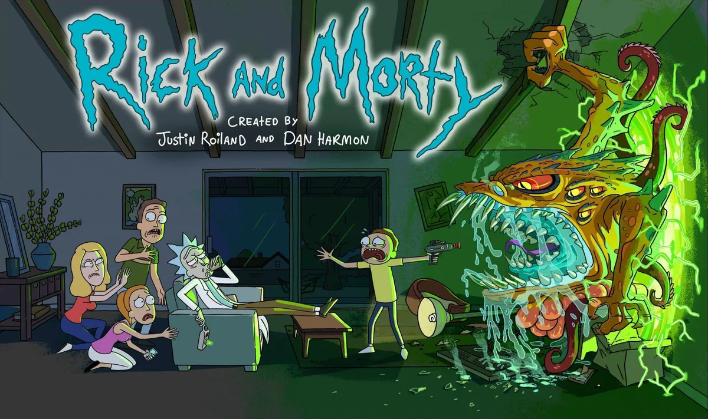

Alexander Robert Hirsch(born June 18, 1985) is an American voice actor, animator, writer, storyboard artist, and producer. He is the creator of the Disney Channel series Gravity Falls, for which he provided the voices of Grunkle Stan, Soos, and Bill Cipher, among others. He also earned BAFTA and Annie Awards for the series. In 2016, Hirsch co-authored Gravity Falls: Journal 3 which debuted as a No. 1 New York Times Best Seller and remained on The New York Times Best Seller list for forty-seven weeks. In 2018, Hirsch wrote Gravity Falls: Lost Legends which also appeared on The New York Times Best Seller list.
|
Gravity Falls (2012) |
My Moon (2018) |
|
Inside Job (2021) |
The Owl House |
| 
Rick and Morty (1 episode) as Toby Matthews |
The Mitchells vs. the Machines (2021) |